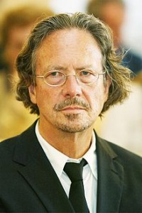

Leserom: En publikumsfornærmelse av Peter Handke med Ivar Furre Aam
- Kategori:
- Kurs og workshops
Kurs og workshops
Åpent for profesjonelle skuespillere, dvs. treårig utdanning i skuespillerkunst eller tilsvarende profesjonell erfaring. - Dato:
- 05.05.2015 til 05.05.2015
- Start kl :
- 11:00
- Slutt kl :
- 16:00
- Pris:
- 300,-
- Adresse:
- Norsk Skuespillersenter, Welhavensgate 1, Oslo
En Publikumsfornærmelse har noen ganger blitt kalt et anti-teaterstykke fordi det motsetter seg all teatralitet, samtidig som det dekonstruerer og beskriver teaterets bestanddeler. Stykket ble først utgitt i 1966 (Tysk: Publikumsbeschimpfung) og premierte ved Theatre am Turm i Frankfurt. I et intervju fortalte Peter Handke siden at formålet med stykket var å «gjøre folk mer bevisste teaterets verden.
{kind=link}
“ The idea was to have the spectators in the orchestra thrown back upon themselves. What mattered to me was making them feel like going to the theatre more, making them see all plays more consciously and with a different consciousness. My theatrical plan is to have the audience always look upon my play as a means of testing other plays. I first intended to write an essay, a pamphlet, against the theatre, but then I realized that a paperback isn't an effective way to publish an anti-theatre statement. And so the outcome was, paradoxically, doing something onstage against the stage, using the theatre to protest against the theatre of the moment--I don't mean theatre as such, the Absolute, I mean theatre as a historical phenomenon, as it is to this day.[1)”
( Artur Joseph, Peter Handke and E. B. Ashton "Nauseated by Language: From an Interview with Peter Handke" The Drama Review: TDR, (The MIT Press), Vol.15, No.1, Autumn 1970, pp.57-61)
Peter Handke
(født 6. desember 1942 i Griffen, Kärnten) er en østerriksk dramatiker og forfatter. Hans uttalelser og skrifter om krigene i det tidligere Jugoslavia og den dekningen de har vært utsatt for i vestlige media er omstridt. Han er blant annet blitt kritisert for å ha talt i Slobodan Milosevics begravelse, for tekster om krigen og for ikke å ha fordømt folkemord. I forbindelse med den internasjonale Ibsen-prisen ble Handkes synspunkt debattert i Norge, selve pristildelingen ble kritisert på grunn av hans uttalelser om Balkan-krigen og da han besøkte Norge for å motta prisen ble han møtt av demonstranter. Blant annet uttalte dikteren Øivind Berg og professor Bernt Hagtvet seg negativt, mens Karl Ove Knausgård tok Handke i forsvar. Professor Arild Linneberg mener «kritikerne overdriver voldsomt» og at Handkes uttalelser har blitt fordreid. Professor Svein Mønnesland mener Handkes Serbia-engasjement «tipper over». Kaj Skagen mener det ikke er dekning for å hevde at Handke støtter (eller ikke tar avstand fra) massemord eller folkemord, og siterer Handke: «Srebrenica er det verste og største 'brotsverk mot menneskeslekta' som har vorte utført i Europa etter krigen». Handke mener at massakren i Srebrenica ikke var ledd i en storstilt plan for å rydde ut en folkegruppe, men massakren vokste frem en kontekst av hat og voldshandlinger. Handke oppfatter ikke Milosevic som en slags Hitler med kontroll over hendelsene i Bosnia, men som en autokratisk (Putin-aktig) nasjonalist, i følge Skagen. Handke skal ha blitt rasende da han leste de hatefulle klisjeene i nekrologene over Milosevic.
Ivar Furre Aam
jobber som skuespiller og regissør. Hans forestilling «The Expressions of the Emotions» var co-producert av Blackbox Teater, Teaterhuset Avant Garden og MDT Stockholm. Etter å ha gått ut fra Akademi for Scenekunst og gjennomført MA-programmet «Den autonoma skodespelaren» på Teaterhøgskolan i Stockholm/Stockholm Dramatiska Høgskola i 2011 har han jobbet i det frie feltet bl. a. med den svenske koreografen Mårten Spångberg, Sidney Leoni, og med Lisa Lie i Blue Motell, ved Trøndelag Teater, i Taremareby ved Teatret Vårt i Molde og ved Nationaltheatret i Disputten av Marivaux. Hans kunstneriske praksis spenner fra tradisjonelt tekstbasert teater til eksperimentelt teater og koreografi.
Mer info: www.ivarfurreaam.com
Pris for mdl av NSF: 250,-